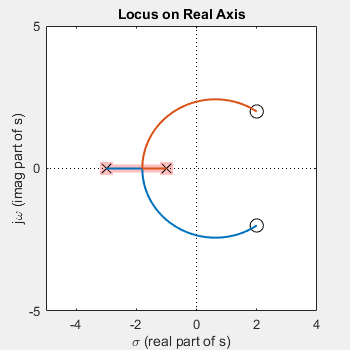
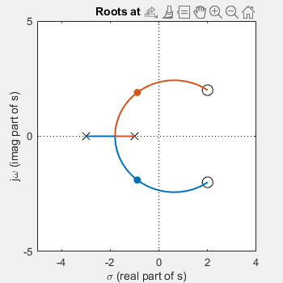

1.1111 s + 3.3333
G(s)H(s)= ---------------------------------------
s^3 + 3.3333 s^2 + 5.5556 s + 2.2222
For the open loop transfer function, G(s)H(s):
We have n=3 poles at s = -1.4± 1.4j, -0.55.
We have m=1 finite zero at s = -3.
So there exists q=2 zeros as |s| goes to infinity (q = n-m = 3-1 = 2).
We can rewrite the open loop transfer function as
G(s)H(s)=N(s)/D(s) where N(s) is the numerator polynomial, and
D(s) is the denominator polynomial.
N(s)= 1.1111 s + 3.3333, and
D(s)= s^3 + 3.3333 s^2 + 5.5556 s + 2.2222.
Characteristic Equation is 1+KG(s)H(s)=0, or 1+KN(s)/D(s)=0,
or D(s)+KN(s) = s^3 + 3.3333 s^2 + 5.5556 s + 2.2222+ K( 1.1111 s + 3.3333 ) = 0
As you can see, the locus is symmetric about the real axis
The open loop transfer function, G(s)H(s), has 3 poles, therefore the
locus has 3 branches.
Each branch is displayed in a different color.
Root locus starts (K=0) at poles of open loop transfer function, G(s)H(s).
These are shown by an "x" on the diagram above
As K goes to infinity the location of closed loop poles move
to the zeros of the open loop transfer function, G(s)H(s).
Finite zeros are shown by a "o" on the diagram above.
Don't forget we have we also have q=n-m=2 zeros at infinity.
(We have n=3 finite poles, and m=1 finite zero).

The root locus exists on real axis to left of an odd number of
poles and zeros of open loop transfer function, G(s)H(s), that are
on the real axis.
These real pole and zero locations are highlighted on diagram,
along with the portion of the locus that exists on the real axis.
Root locus exists on real axis between:
-0.55 and -3
... because on the real axis,
we have 1 pole at s = -0.55,
and we have 1 zero at s = -3.
In the open loop transfer function, G(s)H(s), we have n=3 finite poles,
and m=1 finite zero, therefore we have q=n-m=2 zeros at infinity.
Angle of asymptotes at odd multiples of ±180°/q (i.e., ±90°).
There exists 3 poles at s = -1.4± 1.4j, -0.55,
...so sum of poles=-3.33.
There exists 1 zero at s = -3,
...so sum of zeros=-3.
(Imaginary components of poles and zeros, if any, cancel when
summed because they appear as complex conjugate pairs.)
Asymptote intersect is at ( (sum of poles)-(sum of zeros) )/q
Intersect is at ((-3.33)-(-3))/2 = -0.33/2 = -0.165 (highlighted by five pointed star).
Break Out (or Break In) points occur where N(s)D'(s)-N'(s)D(s)=0, or
2.2222 s^3 + 13.7037 s^2 + 22.2222 s + 16.0494 = 0. (details below*)
This polynomial has 3 roots at s = -4.2, -0.99± 0.86j.
From these 3 roots, there exists 1 real root at s = -4.2.
These are highlighted on the diagram above (with squares or diamonds.)
None of the roots are on the locus.
* N(s) and D(s) are numerator and denominator polynomials
of G(s)H(s), and the tick mark, ', denotes differentiation.
N(s) = 1.1111 s + 3.3333
N'(s) = 1.1111
D(s)= s^3 + 3.3333 s^2 + 5.5556 s + 2.2222
D'(s)= 3 s^2 + 6.6667 s + 5.5556
N(s)D'(s)= 3.3333 s^3 + 17.4074 s^2 + 28.3951 s + 18.5185
N'(s)D(s)= 1.1111 s^3 + 3.7037 s^2 + 6.1728 s + 2.4691
N(s)D'(s)-N'(s)D(s)= 2.2222 s^3 + 13.7037 s^2 + 22.2222 s + 16.0494
Here we used N(s)D'(s)-N'(s)D(s)=0, but we could multiply
by -1 and use N'(s)D(s)-N(s)D'(s)=0.
Find angle of departure from pole at -1.39+1.44i
Note: Theta_p2 denotes angle labeled theta with subscript p2.
Theta_z1=angle((Departing pole)- (zero at -3) ).
Theta_z1=angle((-1.39+1.44i) - (-3)) = angle(1.61+1.44i) = 41.8098°
Theta_p2=angle((Departing pole)- (pole at -1.39-1.44i) ).
Theta_p2=angle((-1.39+1.44i) - (-1.39-1.44i)) = angle(0+2.88i) = 90°
Theta_p3=angle((-1.39+1.44i) - (-0.55)) = angle(-0.84+1.44i) = 120.2564°
Angle of Departure is equal to:
Theta_depart = 180° + sum(angle to zeros) - sum(angle to poles).
Theta_depart = 180° + 41.8098-210.2564.
Theta_depart = 11.6°.
This angle is shown in gray.
It may be hard to see if it is near zero°.
No complex zeros in loop gain, so no angles of arrival.
Locus does not cross imaginary axis.

Characteristic Equation is 1+KG(s)H(s)=0, or 1+KN(s)/D(s)=0,
or D(s)+KN(s) = s^3 + 3.3333 s^2 + 5.5556 s + 2.2222+ K( 1.1111 s + 3.3333 ) = 0
So, by choosing K we determine the characteristic equation
whose roots are the closed loop poles.
For example with K=2.04973, then the characteristic equation is
D(s)+KN(s) = s^3 + 3.3333 s^2 + 5.5556 s + 2.2222 + 2.0497( 1.1111 s + 3.3333 ) = 0, or
s^3 + 3.3333 s^2 + 7.833 s + 9.0546= 0
This equation has 3 roots at s = -0.77± 2.1j, -1.8.
These are shown by the large dots on the root locus plot
Characteristic Equation is 1+KG(s)H(s)=0, or 1+KN(s)/D(s)=0, or
K = -D(s)/N(s) = -( s^3 + 3.3333 s^2 + 5.5556 s + 2.2222 ) / ( 1.1111 s + 3.3333 )
We can pick a value of s on the locus, and find K=-D(s)/N(s).
For example if we choose s= -1.3 + 1.6j (marked by asterisk),
then D(s)=-0.179 + -0.808j, N(s)= 1.89 + 1.75j,
and K=-D(s)/N(s)=0.264 + 0.183j.
This s value is not exactly on the locus, so K is complex,
(see note below), pick real part of K (0.264)
For this K there exist 3 closed loop poles at s = -1.3± 1.5j, -0.82.
These poles are highlighted on the diagram with dots, the value
of "s" that was originally specified is shown by an asterisk.
Note: it is often difficult to choose a value of s that is
precisely on the locus, but we can pick a point that is close.
If the value is not exactly on the locus, then the calculated
value of K will be complex instead of real. Just ignore the
the imaginary part of K (which will be small).
Note also that only one pole location was chosen and this
determines the value of K. If the system has more than one
closed loop pole, the location of the other poles are
determine solely by K, and may be in undesirable locations.